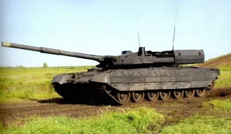

- український основний бойовий танк , розроблений Харківським конструкторським бюро з машинобудування (ХКБМ) . Є подальшим розвитком танка Т-80УД [ 3 ] . Базову серійну модифікацію, Об'єкт 478ДУ9, прийнято на озброєння Збройних сил України 8 лютого 2000 року постановою Кабінету Міністрів України № 237-5; всього виготовлено настановну партію з 10 машин
також є ще один танк під назвою т-95 «Чёрный орёл»

(«Об'єкт 640») — російський досвідчений основний танк, розроблений наприкінці 1990-х Омським конструкторським бюро транспортного машинобудування. Створювався як засіб відвернути увагу західних військових фахівців від перспективного основного танка Об'єкт 195, що розроблявся за умов повної секретности.[1] Не пізніше,
ніж у 2014 році «Чорний орел» перебував у музеї омського заводу разом з іншим досвідченим танком Т-80УМ1 «Барс». Станом на початок 2022 року, танк, як і раніше, знаходився всередині заводу транспортного машинобудування поряд із досвідченим легким танком для потреб морської піхоти БММП.